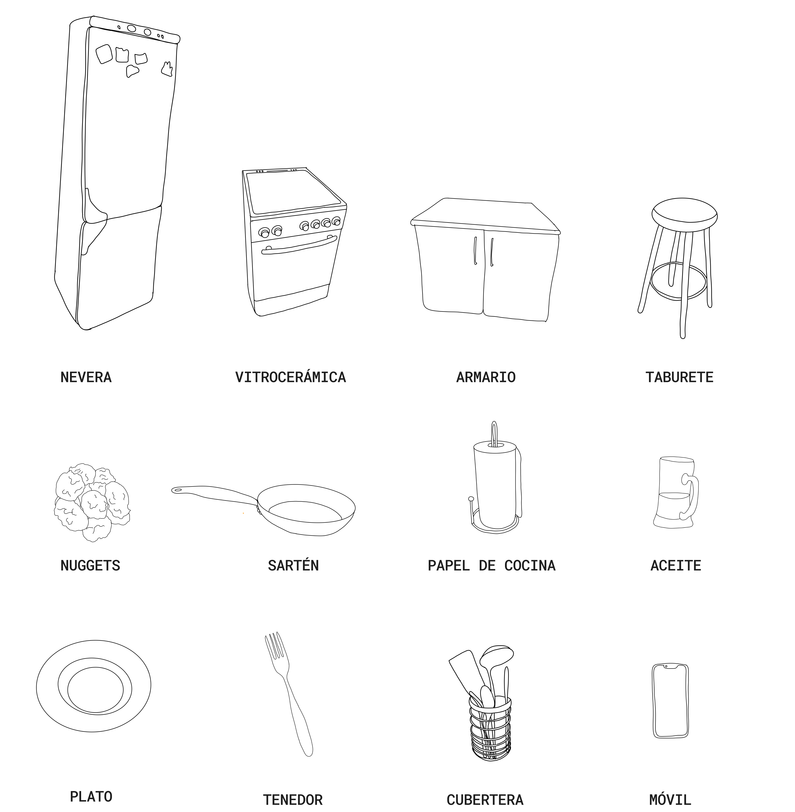
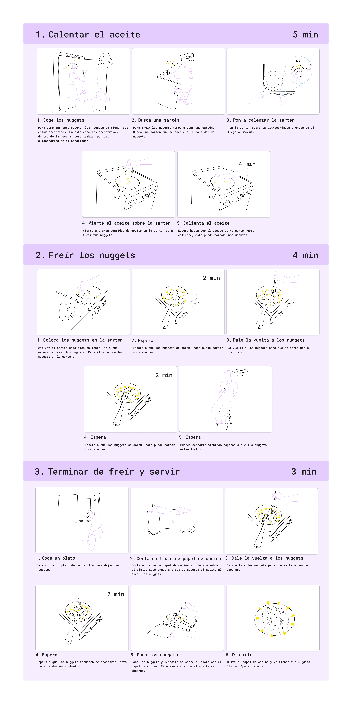
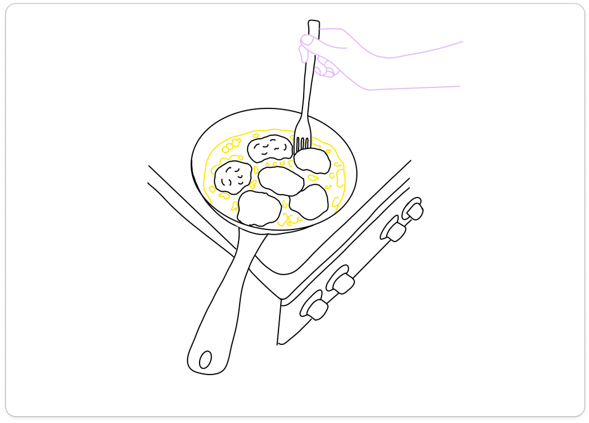

For this work, the activity of frying nuggets was selected. First, a person who was going to carry out the mentioned activity was recorded. After recording the video, it was watched several times, and the following script was prepared:
Open the fridge and take out the nuggets
Open the cupboard and take out the frying pan
Place the frying pan on the stovetop and turn the heat to 6
Take the oil and pour it into the pan
Wait for the oil to heat up
Check if the oil is hot
Place the nuggets in the pan
Wait, sit on the stool, and look at the phone
Take the fork and flip the nuggets
Wait again
Open the cupboard, take a plate, cut a piece of kitchen paper, and place it on the plate
Flip the nuggets again
Wait for them to finish cooking and take them out onto a plate
Once this script was completed, the inventory was prepared, the frames that best represented each of the steps were selected, and finally, the visual narration was created.
Visual inventory

Storyboard

Selected Frame
From the storyboard, a frame was chosen from which three different points of view were shown.

The selected points of view are the following:
From the pan towards the person: This point of view allows us to show the emotional state of the person while performing the action. Flipping the nuggets, although a fairly simple task, requires concentration from the user—especially when done with a simple fork, as it demands extra care during execution.
The person’s point of view: This second perspective allows us to show how the person carrying out the task experiences the action, focusing attention on the act itself.
From the outside: This last point of view aims to show how an external observer would see the user performing the action of flipping a nugget.
Looking more closely at the different points of view:
From the pan towards the person, the main focus is on the one performing the action, aiming to convey what the user feels while carrying it out, although this is still influenced by the surrounding context.
In the person’s point of view, the highlighted elements would be the stovetop, the pan, the oil, the nuggets, the fork, their quantities, the timing, etc. Here, the emphasis is on how the action is performed.
Finally, the third point of view—an external perspective—focuses on what is happening, but in a more superficial way.